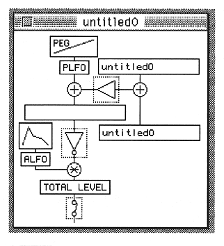
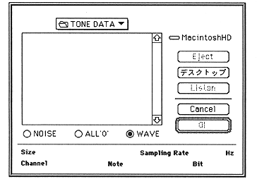

Return to previous page ｜ Return to menu ｜ Go to next page
- 3 Operate the Layer window
The Layer window acts as a mixer. You can adjust the output and set the channel and level to be input to the effector. The minimum thing you want to do to play a sound is to maximize the output and determine the range of MIDI notes that will play this sound.
Click the number part of END. Then the cursor will appear. Enter 127. Next, set the DirectLevel slider to the far right. The number next to the slider should now be 7.
Now enter your name here as well. The method is the same as entering the voice name. The output is now set up. All that remains is to set the detailed parameters. Double-click the number next to the layer name. The Slot window is displayed.

4 Operate the Slot window
Set parameters here. Parameters are divided into blocks by item, and each has a setting window. First, let's set the minimum parameters for sounding.
Double-click on the square in the middle that has nothing written on it. Then, the window to input AIFF data, that is, WAVE data is displayed.

Return to previous page ｜ Return to menu ｜ Go to next page